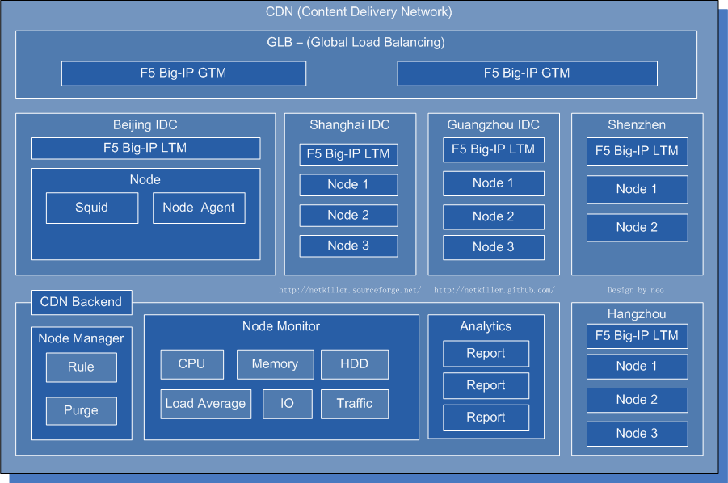

第 1 章 Architecture Overview
上一页
部分 I. Multi-dimension Architecture
下一页
Home
|
Mirror
|
Search
第 1 章 Architecture Overview
目录
1. CDN (Content Delivery Network)
2. Traffic
2.1. bandwidth
2.1.1. firewall
2.1.2. switch
2.1.3. Server
2.2. Session
2.2.1. firewall
2.2.2. Server
2.2.3. application
2.3. IO
2.3.1. 分布IO
2.3.2. FC SAN
2.3.3. iSCSI / FCoE
2.3.4. InfiniBand 或 RDMA
3. Distributed File System(簇文件系统)
3.1. 聚合文件系统
3.2. 全局文件系统
3.3. 负载均衡文件系统
3.4. 网络块设备
Overall structure
1. CDN (Content Delivery Network)
I analyzed CDN realization principle, look at the picture below.

Please enable JavaScript to view the
comments powered by Disqus.
comments powered by
Disqus